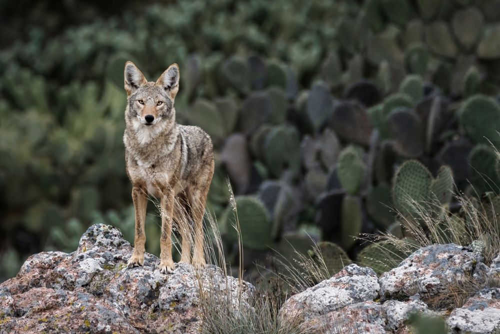

|
El coyote (Canis latrans) es un mamífero carnívoro de tamaño mediano, perteneciente a la familia Canidae, que habita en una amplia variedad de ecosistemas en México, desde bosques y desiertos hasta áreas urbanas. Su peso oscila entre 8 y 15 kg, con un pelaje que varía del gris al marrón claro, y una cola larga y espesa
menu principal
|

 COYOTE
COYOTE